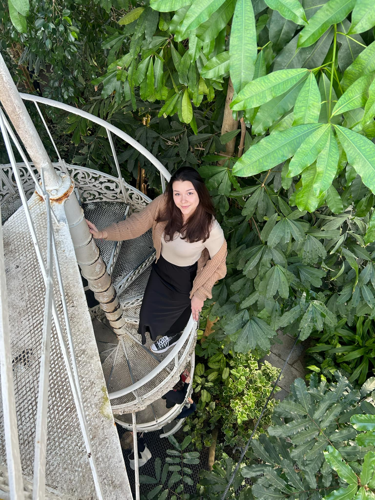
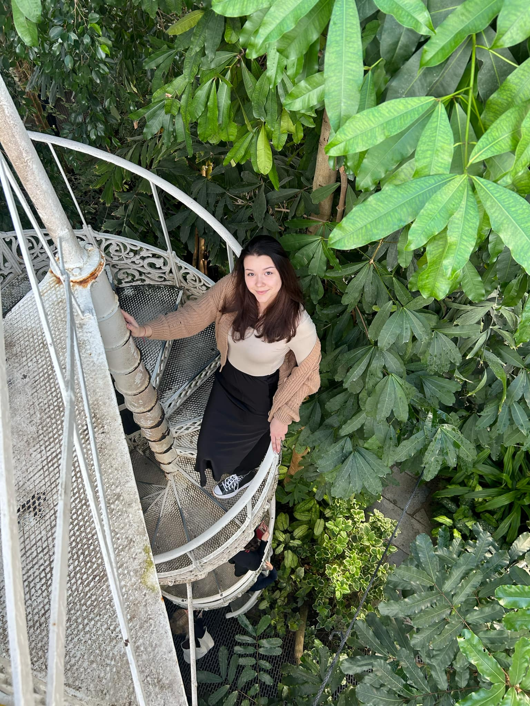
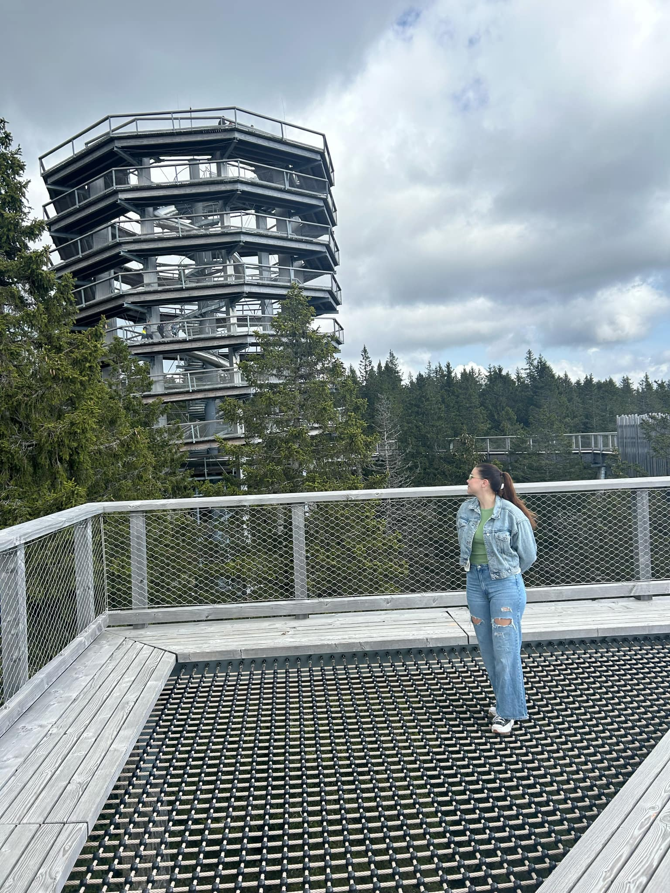

1. Moja dziewczyna na plaży w Perpignan, Francja.

2. Moja dziewczyna w drodze powrotnej z Janela do Inferno, San Miguel, Portugalia.

3. Moja dziewczyna w Italice, Sewilla, Hiszpania.

4. Moja dziewczyna w ogrodzie botanicznym w Kopenhadze, Dania.
1. Perpignan nie miało w sobie nic specjalnego. Poza latarnią i oceanarium one były super. Ale i tak była to mega fajna mieścina, dała się zrelaksować i dobrze zjeść, chociaż liczyłam ze woda w morzu będzie cieplejsza (byłam w maju nie wiem czego oczekiwałam).
2. Ten wodospad mimo że mniejszy niż się spodziewałam był mega super z resztą jak cała wyspa. Najpiękniejsze miejsce w jakim byłam serio. A ten mościk/wiaduk/niewiadomoco był wart wypruwania sobie płuc na szlaku. Niby nie można było na niego wchodzić ale kto mnie w lesie sprawdzi.
3. W ogóle nie chciałam tam jechać. Sewilla mega slay, ale to te ruiny takie o. Sterta kamieni na sobie, ale chociaż miały fajną historię i zdjęcia ładnie wyszły. Odkryłam tam też ogórki które wybuchają jak się je dotknie, były dla mnie główną atrakcją.
4. Jestem tam średnio dwa razy do roku and I mean it when I say KOCHAM TO MIASTO. Ten ogród botaniczny to najlepsze miejsce jakie istnieje na ziemi. A Duńczycy są tacy super. Jest strasznie drogo ale imo i tak warto.
5. Wiedeń to gówno. Druga Warszawa. Za dużo ludzi, wszędzie daleko i śmierdzi. Ale chociaż budynki mają ładne i wypiłam tam najlepsza kawę w moim życiu. Myślę że już więcej tam nie wrócę. Chyba że dla kawy.
6. Werona była akurat bardzo fajna. Sporo do zwiedzania ale dość blisko siebie. To był mój pierwszy i chyba nie ostatni raz we Włoszech. Myślałam że będzie dużo ludzi ale zdawało się tak kameralnie na ulicach. No i ogólnie mega piękne widoki i pyszne jedzenie.
7. A tam akurat byłam na wycieczce z biura, średnia organizacja ale dla widoków warto. Było tam naprawdę pięknie, chociaż moja choroba lokomocyjna ledwo dawała radę w drodze na szczyt. A no i na rafting po rzece to było super przeżycie.
8. Wyczaiłam tę wieżę na znaku jadąc autostradą i powiedziałam że muszę na nią pójść. I super że się uparłam bo było mega, mimo że mam lęk wysokości. Z góry wieży widok głównie na las XD ale przynajmniej na dół można było zjechać zjeżdżalnią. Ogólnie Słowenia mega piękna szkoda że nie miałam więcej czasu na zwiedzanie.
1. Moja dziewczyna na plaży w Perpignan, Francja.
2. Moja dziewczyna w drodze powrotnej z Janela do Inferno, San Miguel, Portugalia.
3. Moja dziewczyna w Italice, Sewilla, Hiszpania.

4. Moja dziewczyna w ogrodzie botanicznym w Kopenhadze, Dania.

5. Moja dziewczyna na ulicach Wiednia, Austria.

6. Moja dziewczyna na zamku św. Piotra w Weronie, Włochy.

7. Moja dziewczyna na szczycie Zielonego kanionu, Manavgat, Turcja.

8. Moja dziewczyna na wieży widokowej w Rogli, Słowenia.